MB System 5.1.1 and fink
Yesterday, Val and I sat down with
our laptops and attached the fink package for MB-System. We had a
big list of things to try to tackle. The biggest was getting the
OpenGL applications to work within fink. This item has been on my
todo list for over a year. Val got the OpenGL link lines figured
out for Mac OSX 10.5, so that the 3D applications are now
available. These are:
If you need some sample data for mbgrdviz, take a look at my web data directory for the SBNMS.
Another change is that Val and I looked through the GNU Coding Standards - 7.3 Making Releases and suggested a change to the release process. As of today's MB-System 5.1.1 release, the tar ball is named mbsystem-5.1.1.tar.gz and unpacks to mbsystem-5.1.1. This will help simplify the packaging process. It used to look like MB-System.5.1.1beta26.tar.gz, which unpacked to mbsystem-5.1.1beta26. Thanks Dave for making the change!
There is still much to do, but this gets the ball rolling again after a long time of packaging stagnation on my part for MB-System.
- mbeditviz
- mbgrdviz
% cd /sw/bin % (for file in mb*; do otool -L $file; done) | less
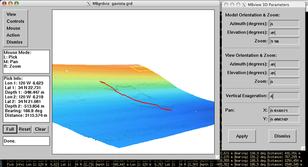
If you need some sample data for mbgrdviz, take a look at my web data directory for the SBNMS.
Another change is that Val and I looked through the GNU Coding Standards - 7.3 Making Releases and suggested a change to the release process. As of today's MB-System 5.1.1 release, the tar ball is named mbsystem-5.1.1.tar.gz and unpacks to mbsystem-5.1.1. This will help simplify the packaging process. It used to look like MB-System.5.1.1beta26.tar.gz, which unpacked to mbsystem-5.1.1beta26. Thanks Dave for making the change!
There is still much to do, but this gets the ball rolling again after a long time of packaging stagnation on my part for MB-System.
12.29.2008 19:51
Django and the NY Times
From Simon Willison's
Weblog - Represent:
There is an article today about the NY Times Represent web app: Open - All the Code That's Fit to printf() - Represent
There is an article today about the NY Times Represent web app: Open - All the Code That's Fit to printf() - Represent
... We built Represent with Django, the Python web framework. Although we do most of our work with Ruby on Rails, we chose Django for this project so we could use GeoDjango, an add-on that supports geometry fields and extends the ORM to allow spatial queries. We started with maps from New York City's Department of City Planning showing district boundaries for City Council, State Assembly, State Senate and the U.S. House of Representatives. We used the Geospatial Data Abstraction Library, a translator library for raster geospatial data formats, through GeoDjango's LayerMapping class to populate a PostgreSQL database extended with the PostGIS spatial extension. The geometry relationship functions provided by PostGIS allow for quick, accurate lookups to determine which legislative districts contain your address. ...
12.29.2008 10:22
Old VizClass back online
I was looking through Bridget Smith-Konter's web
pages and saw that she linked to my 2003 Visualization Class
from her 2005
SIO Viz Class Notes, but I had a broken link. I've put the
class back online here: VizClass03.
For the Scripps
Visualization Contest, each winner teaches a course the
folloing year to the students on visualization techniques. I took
first in 2002 at the first ever competition. Bridget took first in
2004.
A note about my class notes:
Back in 2003, SIO had a large SGI visualization computer that drove a 3 projector 21 foot wide display. Today, not many people use SGI's running IRIX and most of my visualization is done on Macs. The lecture notes still have lots of relevant tips, but you will have to read around the SGI specifics that are no longer relevant.
A note about my class notes:
Back in 2003, SIO had a large SGI visualization computer that drove a 3 projector 21 foot wide display. Today, not many people use SGI's running IRIX and most of my visualization is done on Macs. The lecture notes still have lots of relevant tips, but you will have to read around the SGI specifics that are no longer relevant.
12.28.2008 22:01
Old Hydrosweep Data
Was looking at some older files and
ran into my old Hydrosweep data of the Eel River / Humboldt area
from my TTN136B cruise
during Nov 2001. I'm pretty sure this data has never been used and
it does not seem to appear in any database. The Hydrosweep system
is a pretty weak by today's standards and is no longer on the R/V
Thompson. Here is a quick look generated on a mac:
It is interesting to see that mbsystem doesn't recognize the file type and that the file format is ASCII...
Updates 29-Dec-2008:
Monica wrote a blog post yesterday that goes into detail of trying out MB-System: MB-System: free, open-source sonar data editing software!
Dale C. points out that if I properly named my data file as TN136HS.306.mb21, then all would work and MB-System would not need the -F21 command line argument.
% wget http://vislab-ccom.unh.edu/~schwehr/TTN136B/Data/hysweep/TN136HS.306.bz2 % bunzip2 TN136HS.306.bz2 % mbm_plot -F21 -ITN136HS.306 -G2 -N % ./TN136HS.306.cmd % open TN136HS.306.ps % convert -rotate 90 TN136HS.306.ps TN136HS.306.png % display TN136HS.306.png
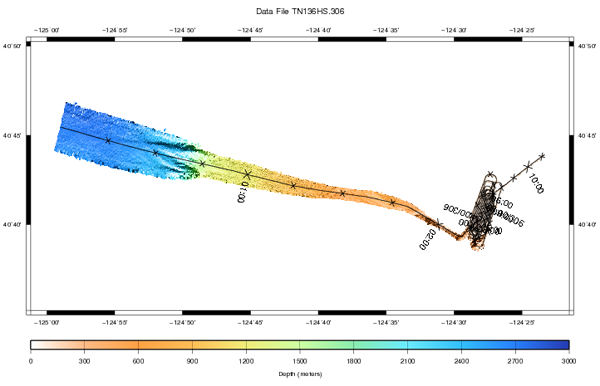
It is interesting to see that mbsystem doesn't recognize the file type and that the file format is ASCII...
ERGNMESS -124.9828643 +40.757629320011101235951 41840103.8 +.2 +5.2B -.40001 2706.41.00 1 29 72 144 215 288 360 433 506 578 655 730 808 883 963104511271208129413821475156416501750184719472057218622952408 0 292706270327032706270527022702269226972693269626882689269026882680268126792683267426572658265126422642265926462632 0 29 70 142 214 286 359 433 507 583 657 731 813 893 9711054114512301314141015131606170118041899201721382240238525182575 2927062714271327102712271627192722271427082723272527162719273727352727273727562750274427442729274127492729275327542672 ERGNSLZT -124.9828643 +40.757629320011101235951103.8106.5 +5.5 +0 -.4 +.60360090.0010 2936023602360836203631364036583663369237123744376438003839387839113960401140744122416042344298436644554579465947460000 2936023616362236263640366036803704371637323782381638393880394839914028409841844239429843714426453046354699484849674939 103.7103.6103.6103.6103.6103.6103.6103.6103.6103.7103.7 ERGNAMPL -124.9828643 +40.757629320011101235951D239236239110511512208000269211094149992 +2.72363342 2222333329244194115069132117116115048053073083054067072067096103110131130116140122120103144104000 3333222229082122166132065099069100183132063093093060051155132096114145097121105090109094072070048 2222333329334302141231128141141077303286251312677364616616110103103080083131128165120210096283000 3333332229334141192225372090443047024017063041040076114064091145088046160124130204183235291233364 ...I found a copy of the documentation online here: INTERFACE SPECIFICATION ATLAS HYDRO SWEEP DS MAGNETIC TAPE RECORDING Issued by: V.Geering
Updates 29-Dec-2008:
Monica wrote a blog post yesterday that goes into detail of trying out MB-System: MB-System: free, open-source sonar data editing software!
Dale C. points out that if I properly named my data file as TN136HS.306.mb21, then all would work and MB-System would not need the -F21 command line argument.
% mbinfo -I TN136HS.306.mb21
Swath Data File: TN136HS.306.mb21
MBIO Data Format ID: 21
Format name: MBF_HSATLRAW
Informal Description: Raw Hydrosweep
Attributes: Hydrosweep DS, bathymetry and amplitude, 59 beams,
ascii, Atlas Electronik.
Data Totals:
Number of Records: 12504
Bathymetry Data (59 beams):
Number of Beams: 737736
Number of Good Beams: 718351 97.37%
Number of Zero Beams: 19385 2.63%
Number of Flagged Beams: 0 0.00%
Amplitude Data (59 beams):
Number of Beams: 737736
Number of Good Beams: 718351 97.37%
Number of Zero Beams: 19385 2.63%
Number of Flagged Beams: 0 0.00%
12.28.2008 09:59
Price of text messages is ridiculous
The cost of a text message is a total
scam. I didn't realize how many people didn't know this. I pay $70
per month for 5GB for Verizon EVDO wireless internet. Let's
translate that into text message. Assume that there are 40 bytes of
overhead per text for 200 bytes per text.
What Carriers Aren't Eager to Tell You About Texting
($70.00 / 5*10^9 bytes) = $1.4*10^-8 per byte $1.4*10^-8 per byte * 200 bytes per text = $2.8*10-6 per text = $0.0000028 / textYet we are charged $0.20 per text.
What Carriers Aren't Eager to Tell You About Texting
... All four of the major carriers decided during the last three years to increase the pay-per-use price for messages to 20 cents from 10 cents. The decision could not have come from a dearth of business: the 2.5 trillion sent messages this year, the estimate of the Gartner Group, is up 32 percent from 2007. Gartner expects 3.3 trillion messages to be sent in 2009. ... UNTIL Mr. Kohl began his inquiries, the public had no reason to think of the text-messaging business as anything but an ordinary one, whose operational costs rose in tandem with message volume. The carriers had no reason to correct such an impression. ...Earth to FCC... where are you?
12.28.2008 00:38
Best airplane photos
I've been on a big kick of take
pictures from planes. Many of us fly all the time for work and you
can get numb to the process of getting to and from place for work,
but can you find a new way to look at what you see all the time?
The more challenging, the better. What's your best photo from an
airplane? Good pictures from cheap cameras and crummy windows are
definitely more interesting.
So next flight you go on, take a bunch of pictures and post one or two of the best or most interesting to you.
I've seen Walker Lake, NV many times...
What are those weird structures to the south? Are they are a part of the Hawthorn Army Depot?
How many times have a flown through the San Jose Airport? The color was horrible, so I tried black and white.
Note: I consider artistic license with Photoshop or similar to be fair game.
So next flight you go on, take a bunch of pictures and post one or two of the best or most interesting to you.
I've seen Walker Lake, NV many times...
What are those weird structures to the south? Are they are a part of the Hawthorn Army Depot?
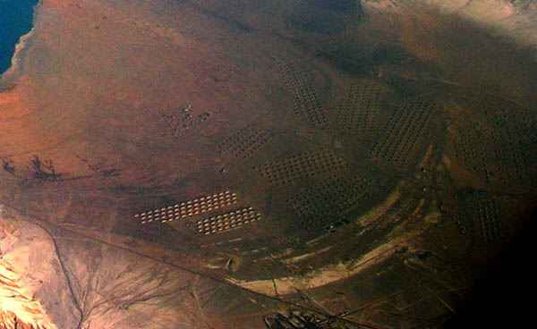
How many times have a flown through the San Jose Airport? The color was horrible, so I tried black and white.
Note: I consider artistic license with Photoshop or similar to be fair game.
12.26.2008 08:15
Mike Jones of Google talks at AGU
Trying to catch up on AGU. Some of the talks this year were recorded and are on the web. Catherine Johnson introduced Michael Jones who presented U15A Frontiers of Geophysics Lecture: The Spread of Scientific Knowledge From the Royal Society to Google Earth and Beyond
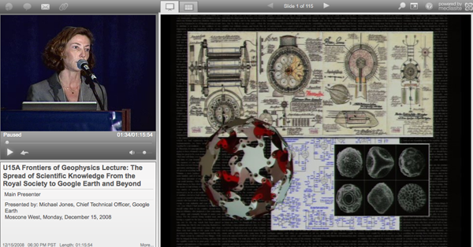
More webcasts are listed here: Fall 2008 Meeting
12.25.2008 07:32
LRIT and Google Oceans
I now hear that Google Oceans may be
appearing Feb 2nd.
Check out the USCG LRIT page. I am intertested in seeing what annoucements come out of the USCG as LRIT starts to be implemented. I don't think I will be looking at LRIT unless someone in the government asks me to. The data access issues with LRIT are likely to reduce its usefulness to researchers. I hope that countries consider releasing LRIT data with some large delay. Even getting data batched and released a year after the fact, would be a very useful tool for research.
Long Range Identification And Tracking (LRIT) Overview [uscg navcen]
Check out the USCG LRIT page. I am intertested in seeing what annoucements come out of the USCG as LRIT starts to be implemented. I don't think I will be looking at LRIT unless someone in the government asks me to. The data access issues with LRIT are likely to reduce its usefulness to researchers. I hope that countries consider releasing LRIT data with some large delay. Even getting data batched and released a year after the fact, would be a very useful tool for research.
Long Range Identification And Tracking (LRIT) Overview [uscg navcen]
... The United States Coast Guard (USCG) is currently developing a National Data Center (NDC) for the United States, which will be fully operational on December 31st, 2008. ...
12.23.2008 16:48
N-AIS Phase II announced
Coast Guard awards
contract for Nationwide Automatic Identification System core data
exchange capability
WASHINGTON - The U.S. Coast Guard's Acquisition Directorate announced Monday the award of a contract to Northrop Grumman Space & Mission Systems Corp. to deliver the core Nationwide Automatic Identification System data exchange capability. Under the contract, valued at about $12 million, Northrop Grumman will provide the necessary shore-side communications, network and processing capability to ensure the effective exchange of Automatic Identification System information between AIS-equipped vessels, aircraft, aids to navigation and shore stations within all major U.S. ports, waterways and coastal zones as well as from AIS-equipped vessels bound for the U.S. The core data exchange capability consists of all the system components and functionality, including AIS receive and transmit messaging, data processing, data storage and retrieval and system monitoring, on a limited geographic scale. AIS is an internationally adopted communication system to provide for autonomous, continuous exchange of vessel positions and other navigation safety related information. "The Nationwide AIS project is already making critical contributions to maritime safety and security at our nation's highest priority ports and coastal zones," said Rear Adm. Gary T. Blore, assistant commandant for acquisitions. "This contract will allow the Coast Guard to fully leverage the inherent features of AIS by adding transmit capabilities to our nationwide system, which will provide a considerable enhancement to safety of navigation and the marine transportation system." The Coast Guard solicited for this work under a full and open competition, following a disciplined process to award the contract from a robust pool of offerors. Northrop Grumman was selected because the firm offered the best value of technical capability, management approach and price. The contract provides for a two-year base period and six, one-year option periods. In addition to the core data exchange capabilities Northrop Grumman will deliver transmit and expanded receive coverage for Coast Guard Sectors Delaware Bay, Philadelphia; Hampton Roads, Va.; and Mobile, Ala., during the base period. Northrop Grumman's Command and Control Systems Division, headquartered at Herndon, Va., will perform the work at Newport News, Va., and Carson, Calif., as well as at each of the three initial Coast Guard sectors and their surrounding areas. The contract option periods include optional tasks to provide surveys and equipment in support of the U.S. Government's implementation of transmit and expanded-receive coverage for the remaining Coast Guard sectors. The approximate total value of this contract, if all options are exercised, is approximately $68 million. "I am looking forward to working with Northrop Grumman to successfully deliver this important new capability," said Cmdr. James K. Ingalsbe, NAIS deputy project manager. "The first increment of NAIS provided the Coast Guard valuable capability to build maritime domain awareness. The award of this contract will allow the Coast Guard to begin using all the capabilities of AIS in support of all Coast Guard missions, and in providing services to mariners to enhance their safety, security, and efficiency." The Coast Guard's Acquisition Directorate is responsible for a $27 billion investment portfolio that includes more than 20 major projects. The Coast Guard's investment in modernization and recapitalization ensures that the operational force has the equipment necessary to remain the lead agency in maritime safety, security and natural resources stewardship.
12.22.2008 12:57
Google Calendar syncing with Apple's iCal
Monica pointed me to:
Getting Started with CalDAV - Calendar Help Center
[google.com]. This has you download and run Calaboration. If you
type your google email address and password. You then see your
calendar. Add it and your done.
12.22.2008 06:26
Vienna to Google Reader
How you read news feeds definitely
changes what you get out of them. I started off with NewNewsWire
Lite as my RSS/Atom reader. It works okay, but I switched to
Vienna to be on
something more open. Trouble is that I use many different macs that
are spread across the country. I have a mac desktop and a mac mini
in my office. I often carry 1 or 2 laptops with me (vmware can't do
it all). I have news readers on a couple of them, but this is all
around trouble. Rather than pay for some service, I figured I'd try
Google's Reader after I saw
someone at AGU using it. So far, it feels like it takes me about 4
times longer to go through my RSS feeds. Hopefully I will get more
comfortable with Reader down the road, but I really feel like
switching back right now.
First, I exported my news feeds from Vienna, giving me an OPML feed file.
Then I went to the reader and under settings did an import.
I still run into people all the time that have never heard of RSS, Atom, or New Feeds. There is just no way I'm going back to the mode of going to websites to see what is new.
First, I exported my news feeds from Vienna, giving me an OPML feed file.
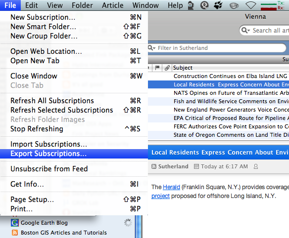
Then I went to the reader and under settings did an import.
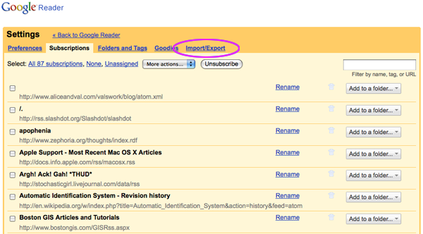
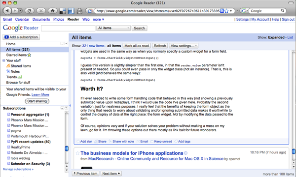
I still run into people all the time that have never heard of RSS, Atom, or New Feeds. There is just no way I'm going back to the mode of going to websites to see what is new.
12.21.2008 10:21
Over La Jolla
This is over La Jolla looking south
at Mission Bay and San Deigo Bay.
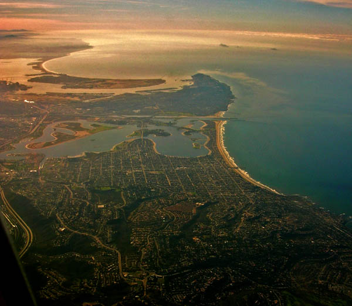
12.20.2008 09:13
San Francisco Bay Area - South Bay
A morning shot looking north east
over the south bay.
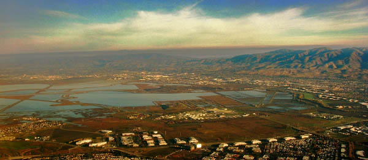
12.20.2008 07:44
Google Earth Design blog
This last week, I spent a while
talking to Rich Treves, who puts out the Google Earth Design
blog. He gives a great presentation and he did one of the
Virtual Globe Google Earth Tech talks. He has some very good ideas
that will push us all forward on producing better visualizations,
but I fear him reviewing any of my visualizations 
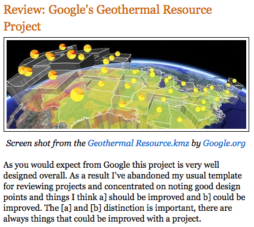
12.19.2008 21:53
Monterey
I headed down to Monterey today and
dropped in on Hans Thomas and his wife Amanda. I got a quick tour
of the Coast Guard pier and saw the local NOAA sanctuary vessel
that is almost (but not quite) an identical twin to the SBNMS R/V
Auk. I wasn't brave enough to pull out the camera phone to get an
image while we were close for fear of being the 10 millionth
mariner to drop their cell in the drink.
From the camera phone:
From my point and shoot, but with some heavy use of Shadow/Highlight...
From the camera phone:
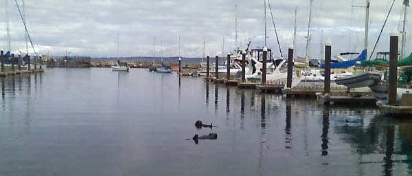
From my point and shoot, but with some heavy use of Shadow/Highlight...
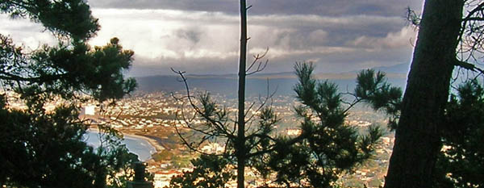
12.19.2008 10:42
Peter Selkin's list of Virtual Globe highlights
I didn't do the best job of taking
notes yesterday. Thanks to
Peter Selkin for letting me post his list: Ten Things I
Learned at AGU's Virtual Globes Sessions
- Search for environmental data with SciScope - very limited now, but a great concept: http://www.sciscope.org/
- Help students write KML for Google Earth with the KML Interactive Sampler: http://kml-samples.googlecode.com/svn/trunk/interactive/index.html
- Capture and modify Google Earth topography in SketchUp (as long as your viewpoint is close to the ground in GE...). Does this mean I might be able to import some topography (e.g. from lidar data) and make a Collada file out of it, then view it in GE? I still haven't got a straight answer.
- Explore the oceans, draw profiles, examine oceanographic data with GeoMapApp: http://www.geomapapp.org/
- Identify solar and wind energy potential with 3Tier's FirstLook: http://firstlook.3tier.com/
- Find coastal landmarks with Kurt's GeoCoastPilot (even though it wasn't what he was presenting!): http://ccom.unh.edu/vislab/projects/GeoCoastPilot.html
- Make thematic maps in KML from public data, or use the Thematic Mapping Engine to make your own: http://www.thematicmapping.org/
- Put Google Charts in Google Earth balloons or use them as placemark icons: http://earth.google.com/outreach/kml_entry.html#tA%20Googol%20of%20Heat%20Beneath%20Our%20Feet
- Beware of design flaws in your KML that might make people laugh at your lack of forethought: http://googleearthdesign.blogspot.com/ (Rich Treves' example of the UK government's "Do Drugs" pencil was hilarious)
- Use NASA WorldWind, formerly PC-only, on any platform (just a preview so far) and make extensions for it because it's open source: http://worldwind.arc.nasa.gov/
12.19.2008 08:39
Google's KML Interactive Sampler
Yesterday's Virtual Globe session
exciting and a bit overwhelming. John Bailey did an amazing job
organizing a very large and diverse group of people.
I am starting to understand the potential of the Google Earth browser plugin. I had been ignoring it and now that they have a Mac version, my eyes are finally open. And now that I look around the blog-o-sphere, I realize that I'm behind the curve in understanding this. The JavaScript API should make possible a number of projects that I would like to do with Google Earth. An excellent example of the plugin is the KML Interactive Sampler. I wish I had this tool when I was first learning KML.
I am starting to understand the potential of the Google Earth browser plugin. I had been ignoring it and now that they have a Mac version, my eyes are finally open. And now that I look around the blog-o-sphere, I realize that I'm behind the curve in understanding this. The JavaScript API should make possible a number of projects that I would like to do with Google Earth. An excellent example of the plugin is the KML Interactive Sampler. I wish I had this tool when I was first learning KML.
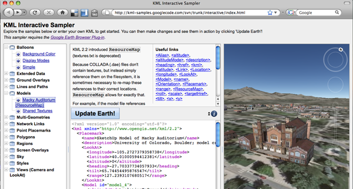
12.17.2008 20:00
Light Up Durham
As a part of
Light Up Durham [wirenh], the city has a bon fire in the DUMP
parking lot (DUMP == Durham Market Place). We caught the lighting
of the fire and the tail end.
Yes, I finally figured out how to transfer pictures from my camera phone via bluetooth without paying Verizon for each one. I suppose it wouldn't have taken me so long to notice the option if I had actually read the manual for my phone.
Yes, I finally figured out how to transfer pictures from my camera phone via bluetooth without paying Verizon for each one. I suppose it wouldn't have taken me so long to notice the option if I had actually read the manual for my phone.
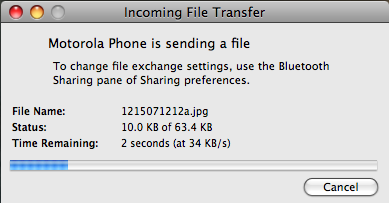
12.17.2008 17:20
AGU
If you are a gmt, mbsystem, and/or
fink user and at AGU by all means track me down. I will be at my
poster tomorrow morning in the Virtual Globes session: 0800h
IN41A-1137 -
Visualizing the Operations of the Phoenix Mars Lander.
It's been a busy time at AGU. Monday I was at NASA Ames with the Intelligent Robotics Group (IRG), Tuesday I gave a Google Tech talk, and today we had some discussions about GMT and MB-System. I met Paul Wessel (who is a coauthor of GMT) and many other people who do really impressive work. We had some discussion about how we might do testing of open source geospatial tools. Paul told us about compare in ImageMagick and there were discussion of grd diff (by which I think they meant grdmath). This is an exciting and vibrant group of people.
Geoff Davis introduced himself to me and he mentioned his use of cfengine. I spent quite a while grilling him about the success that he has. It sounds like the learning curve is well worth it.
This is just 1/2 of the room for posters.
It's been a busy time at AGU. Monday I was at NASA Ames with the Intelligent Robotics Group (IRG), Tuesday I gave a Google Tech talk, and today we had some discussions about GMT and MB-System. I met Paul Wessel (who is a coauthor of GMT) and many other people who do really impressive work. We had some discussion about how we might do testing of open source geospatial tools. Paul told us about compare in ImageMagick and there were discussion of grd diff (by which I think they meant grdmath). This is an exciting and vibrant group of people.
Geoff Davis introduced himself to me and he mentioned his use of cfengine. I spent quite a while grilling him about the success that he has. It sounds like the learning curve is well worth it.
This is just 1/2 of the room for posters.
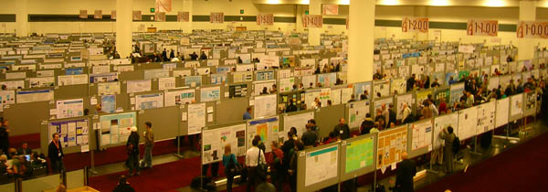
12.17.2008 14:00
cvs2svn
Val and I have been looking at how to
properly convert a cvs filesystem to svn. We don't want to loose
any of the revision info and we'd like to keep the history clean,
but I keep running into trouble. The trouble is that you can only
specify one directory
% cvs2svn --svnrepos ~/mbsvn rootThat makes a tree that looks like root/{mb-cookbook,mbsystem,util}. I can just to three svn mv's. I have since been trying to add things by pieces such that I don't have to rearrange things to get rid of the root.
% cvs2svn --svnrepos ~/mbsvn mb-cookbook % cvs2svn --existing-svnrepos --svnrepos ~/mbsvn mbsystem % cvs2svn --cvs-revnums --existing-svnrepos --svnrepos ~/mbsvn mbsystem ===== pass 15 (OutputPass) ==== Starting Subversion Repository. Starting Subversion r1 / 7 Starting Subversion r2 / 7 Starting Subversion r3 / 7 Starting Subversion r4 / 7 Starting Subversion r5 / 7 ERROR: svnadmin failed with the following output while loading the dumpfile: svnadmin: File already exists: filesystem '/Users/schwehr/mbsvn/db', transaction '107-2z', path 'trunk'Anybody have a suggestion on how best to do this?
12.15.2008 07:21
Pydro using I-AIS for realtime safe water contour
This project was done to illustrate
how AIS Binary Messages might provide real-time maritime decision
support.
Pydro demonstrating realtime waterlevel/tide via AIS
Pydro demonstrating realtime waterlevel/tide via AIS
Produced by Rick Brennan, Jack Riley, Barry Gallagher, and Kurt Schwehr. Pydro is receiving Internet Automatic Identification System (I-AIS) packets from NOAA's PORTS/CO-OPS waterlevel (tide) database. The background is a high resolution chart created by the Bay Hydrographer. Safe water contours are created in real-time from the combination of waterlevel derived from TCARI and the bathymetry. Waterlevel has been exaggerated by a multiplier to better demonstrate the system.
12.15.2008 06:42
2006 SBNMS Vessel Traffic
Posted another video:
Stellwagen Bank National Marine Sanctuary 2006 vessel traffic [youtube]
Stellwagen Bank National Marine Sanctuary 2006 vessel traffic [youtube]
During 2006, 3 receivers of the maritime Automatic Identification System (AIS) collected vessel position broadcasts. These vessel reports where separated into 4 categories by Hatch, Thompson, and Schwehr. Then Schwehr gridded the data groups into number of transits across each grid cell. Thompson visualized the grids using ArcGIS where height and red shows the areas of greatest number of transits. This region is the Stellwagen Bank National Marine Sanctuary (SBNMS).The journal paper: Hatch, L., C. Clark, R. Merrick, S. Van Parijs, D. Ponirakis, K. Schwehr, M. Thompson, D. Wiley, Characterizing the Relative Contributions of Large Vessels to Total Ocean Noise Fields: A Case Study Using the Gerry E. Studds Stellwagen Bank National Marine Sanctuary, Environmental Management, May 2008.
12.14.2008 10:45
Post ice storm
After the storm:
The Moon going down over Manchester at sunrise the day after the big ice storm...
The Moon going down over Manchester at sunrise the day after the big ice storm...
12.14.2008 07:47
Colin Ware in Foster's Daily
Today, Colin is featured in Dover's
news paper:
UNH professor maps ocean currents for Smithsonian
I took this picture of Colin a month or two ago:
I took this picture of Colin a month or two ago:
12.14.2008 07:39
Me showing off the KLY-2 for AMS
In getting ready for the coming week,
I have come back across a large number of things that should have
been posted years ago. I wish more groups/labs created these kinds
of videos. Hats off to Genevieve Tauxe for all her hard work. The
KLY-2 is an older device that new labs are not likely to have, but
this is main device that got me my PhD. This device is Bruno the
Kappabridge. There are several more videos here: SIO Paleomag Lab
tours
Kurt showing AMS with the Kappabridge
Kurt showing AMS with the Kappabridge
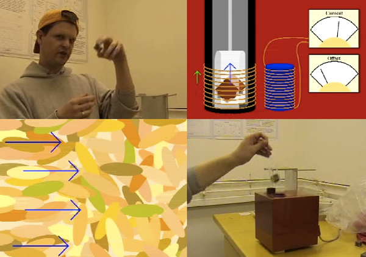
12.13.2008 10:02
AGU Poster on Thursday
If you are at AGU this week, come by
my poster on Thursday in the Virtual Globes session. Here is a
small version of my poster, but remember that the session is about
the live screens more than the static posters.
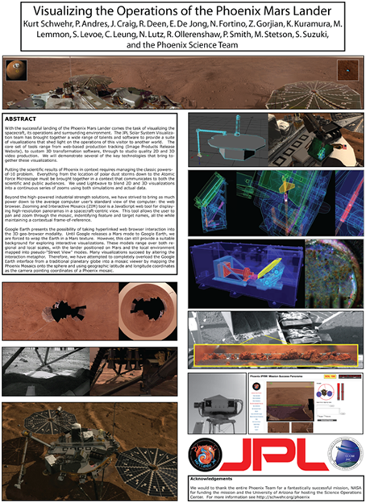
12.12.2008 14:33
RVTEC best practices
This will be unbelievably valuable!
Part of my blogging is to get towards this kind of thing (not that
I'm very successful at writing about best practices and usually
just have stuff that "works for me").
Thomas Wilson wrote on RVTEC:
Thomas Wilson wrote on RVTEC:
At the SAMOS meeting in Seattle earlier this year I was asked to lead a team: 1) To evaluate/assemble and/or develop "best practice" recommendations for calibration, maintenance, and quality assessment for underway oceanographic and meteorological sensors, particularly those in autonomous/unattended systems. The idea is not to reinvent work done by others but to produce a practical single reference drawing on existing material when possible. 2) To aim the product at ship operators and marine technicians and particularly focus on what can be practically done by crew while underway and by maintenance personnel during short dockside periods. 3) As an appendix, to identify "soft spots" where attainment of scientific goals may be limited by technology and/or logistics (i.e. the XXX meter works fine in a laboratory or aboard a research vessel but needs further development to deliver sufficient accuracy given the maintenance limitations of an autonomous shipboard system). Please realize that the intent here is not to question or alter procedures aboard research vessels with full-time onboard marine techs. It is instead to develop and refine procedures for vessels that do not have onboard marine techs.
12.12.2008 12:53
Crazy freezing rain
Freezing rain is just no fun. But at
least some of the results are pretty. Now, if people here could
just respect the fact that a stoplight that is out should turn into
a four-way stop.
Ice storm leaves thousands without power; governor declares emergency
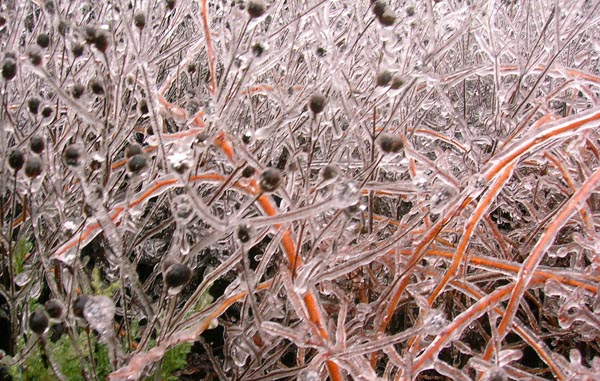
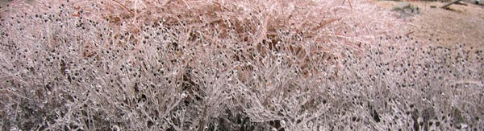
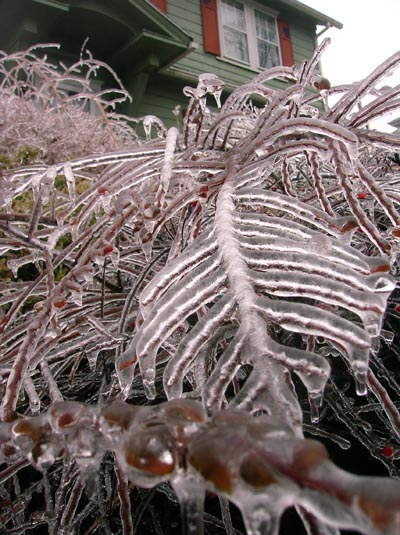
Ice storm leaves thousands without power; governor declares emergency
DOVER - Gov. John Lynch declared a state of emergency this morning after a steady stream of freezing rain and sleet has left hundreds of thousands of people without power throughout the state and made for treacherous driving this morning. "With rain expected to continue and temperatures expected to drop as the day progresses it is important that the state has all its resources available to manage this situation," Lynch said in a release. "I urge all New Hampshire citizens to take sensible precautions and heed all warnings from public officials." ... Most of the Dover is in the dark and officials have been told to prepare for a power outage that could last days. ...
12.11.2008 12:42
New AIS rules for the US
This should be released real soon
now...
Vessel Requirements for Notices of Arrival and Departure, and Automatic Identification System [regulations.gov]
Vessel Requirements for Notices of Arrival and Departure, and Automatic Identification System [regulations.gov]
PROPOSED RULEMAKING [USCG-2003-21869] On December 10, 2008 (73 FR 69000),-in an effort to improve navigation safety, enhance the ability to identify and track vessels, heighten our overall maritime domain awareness, and thus help us address threats to maritime transportation safety and security and mitigate the pos-sible harm from such threats, the Coast Guard published and solicited comments on a proposed rule that would expand the applicability of AIS requirements, beyond Vessel Traffic Service (VTS) areas, to all U.S. navigable waters and require AIS carriage by most commercial vessel; ...
12.10.2008 16:14
Currents shown in Nobletec
I tried initially uploading this
video to YouTube. That was a disaster. The arrows just did not show
up for quite a few seconds. I converted the video to an mp4 and put
it back up on YouTube with much better results: Nobletec Currents in
Buzzards Bay and Nantucket Sound Now how do you edit the vimeo
text?
Carl K. created this video for me with Camstudio. This is Nobltec with the Tides & Currents module.
Currents in Nobletec from Kurt Schwehr on Vimeo.
Carl K. created this video for me with Camstudio. This is Nobltec with the Tides & Currents module.
Currents in Nobletec from Kurt Schwehr on Vimeo.
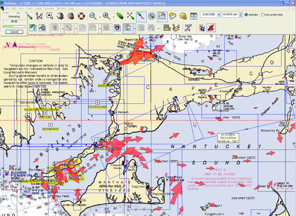
12.10.2008 11:13
Phoenix number 2 scientific discovery of 2008
Coming in right behing the Large
Hadron Collider...
Top 10 Scientific Discoveries: 2. The North Pole - of Mars
[Time]
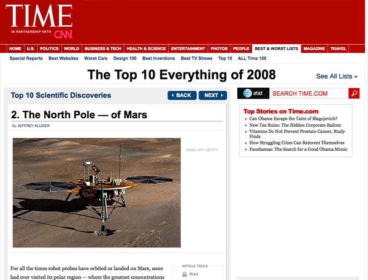
12.10.2008 07:46
VOS Vessel Tracks in Google Earth
Ben
Smith has been working on the VSTP/VOS/AMVER vessel traffic. Ben did all the
heavy lifting and this morning, I put together a first draft of a
Google Earth visualization.
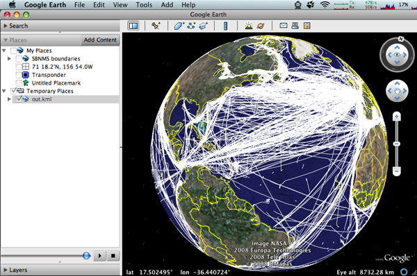
#!/usr/bin/env python
import sqlite3 # Use python 2.5 or newer
def main():
cx = sqlite3.connect('200810-bensmith-vosdata.db')
cu = cx.cursor()
callsigns = [ x[0] for x in cu.execute('SELECT DISTINCT(callsign) FROM vosdata;').fetchall() ]
print 'Num ships:',len(callsigns)
o = file('out.kml','w')
o.write('''<?xml version="1.0" encoding="UTF-8"?>
<!-- voxdb2kml by Ben Smith and Kurt Schwehr py -->
<kml xmlns="http://earth.google.com/kml/2.1">
<Document>
<Folder>
''')
for callsign in callsigns:
print callsign
o.write(' <Placemark>\n')
o.write(' <name>%s</name>\n' % callsign)
o.write(' <LineString><coordinates>\n')
for position in cu.execute('SELECT longitude, latitude FROM vosdata WHERE callsign=?;',(callsign,)):
o.write(' %.5f,%.5f\n' % position)
o.write(' </coordinates></LineString>\n')
o.write(' </Placemark>\n')
o.write(''' </Folder>
</Document>
</kml>
''')
if __name__=='__main__':
main()
Here is what the table schema currently looks like.
% sqlite3 200810-bensmith-vosdata.db .schema CREATE TABLE VOSdata (id TEXT PRIMARY KEY, sqltime TEXT, latitude REAL, longitude REAL, wkt_geographic TEXT, callSign TEXT);And some sample data:
% sqlite3 'SELECT * FROM vosdata LIMIT 5;' VTXK986076000|2001-03-31 00:00:00|13.9|42.9|1390.00000 4290.00000|VTXK VTXK986097600|2001-04-01 00:00:00|14.9|42.0|1490.00000 4200.00000|VTXK ATQO986097600|2001-04-01 00:00:00|22.7|66.5|2270.00000 6650.00000|ATQO VVGG986140800|2001-04-01 00:00:00|47.5|-6.1|4750.00000 -610.00000|VVGG VTXK986162400|2001-04-01 00:00:00|18.4|39.8|1840.00000 3980.00000|VTXKAnd just how much data is in this test run:
% sqlite3 200810-bensmith-vosdata.db 'SELECT count(*) FROM VOSdata;' 164234Don't forget to create an index on the callsign so that queries go really fast!
% sqlite3 200810-bensmith-vosdata.db 'CREATE INDEX callsign_idx ON vosdata(callsign);'Future enhancements might include using a TIMESTAMP type for the time field and creating timespans for the vessel traffic.
12.09.2008 17:39
U3D for Embedding 3D in PDFs
Wow! This is cool. Embedding a 3D
model is really crazy, but it works! I ran into U3D
support in MeshLab.
Check out their sample pdf: Laurana.pdf [meshlab]
Support for saving meshes in U3D format is useful for creating, using latex, nice PDFs with embedded 3D models. You simply need to convert your mesh into u3d format, and include the small snip of tex code generated by MeshLab with the right viewing parameters, in your latex paper and simply compile it with pdflatex. Thanks to the Movie15 package, you will have your u3D embedded in the pdf. ...
Check out their sample pdf: Laurana.pdf [meshlab]
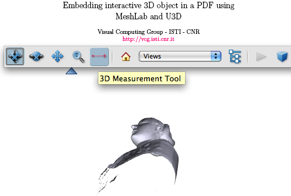
12.09.2008 17:20
Highland Light in Google Earth
Christiana Arsenault has been working
on getting her Highland Light model from 3D Studio into Google
Earth. I loaded up her Sketchup model and tried out the placement
tools in Sketchup. I did okay, but not as good as Chris.
Here is what it looks like in Google Earth. I definitely noticed that some part of the process has degraded or dropped the surface normals from the model. The original model in 3D studio was so good that many people were surprised to find out that it is a computer rendering.
There were some trouble spots. I have Sketchup Pro 6, but only regular Sketchup 7. Could this have been done better with the Pro 7? Sketchup does not seem to want to import other formats and 6 can't import the default 7 models. Still, the process is not too hard.
I took a look at the 3D Studio source model using MeshLab. It didn't seem to load the texture, but it shows that source has got proper surface normals. I photoshopped a couple views together from MeshLab:
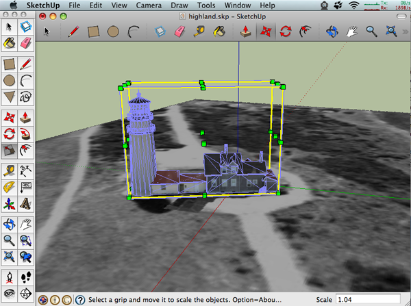
Here is what it looks like in Google Earth. I definitely noticed that some part of the process has degraded or dropped the surface normals from the model. The original model in 3D studio was so good that many people were surprised to find out that it is a computer rendering.
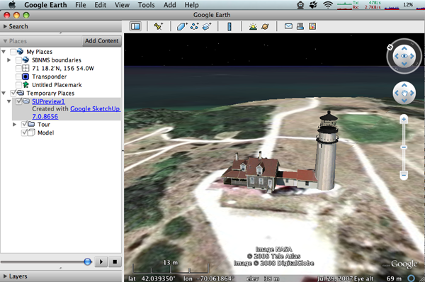
There were some trouble spots. I have Sketchup Pro 6, but only regular Sketchup 7. Could this have been done better with the Pro 7? Sketchup does not seem to want to import other formats and 6 can't import the default 7 models. Still, the process is not too hard.
I took a look at the 3D Studio source model using MeshLab. It didn't seem to load the texture, but it shows that source has got proper surface normals. I photoshopped a couple views together from MeshLab:
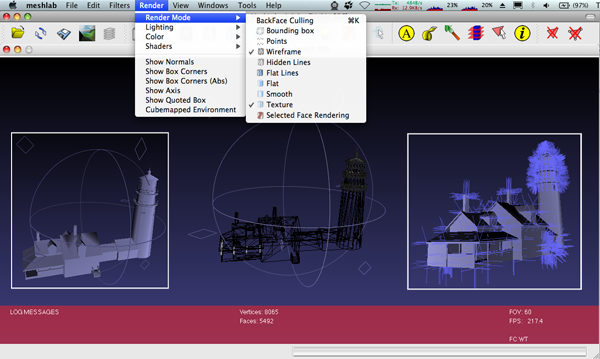
12.09.2008 17:03
Google digitizing the SIO Library
Okay, this notice from the Scripps
library is just cool!
Digitization of Scripps Library collection by Google starts in January, and will take about 4 months. A shipment of 6K-8K items will be picked up every 2 weeks and taken to Google, followed by the return of a preceding shipment. Material will be off the shelves 4-5 weeks while being digitized. Ask at Scripps Library's front circulation desk regarding an item you need retrieved from shipment staging.
12.09.2008 15:54
NH Adobe meeting - Photoshop CS3 Extended Animation
I had no idea that you can load
movies into Photoshop. I only have CS3 without the needed Extended
options, so I could not do everything that was presented today by
Penny Savage at the NH Adobe User Group.
A lot of the stuff that the SSV does for panoramas could be done in
Photoshop CS3/4 Extended. The animation and keyframe tools are
really impressive.
Here was my weak attempt to try out just a few of the simpler features that were demonstrated.
Here was my weak attempt to try out just a few of the simpler features that were demonstrated.
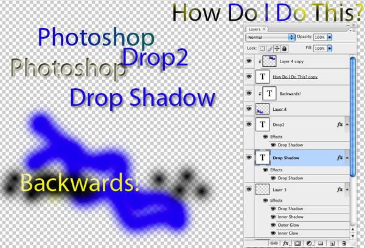
12.08.2008 17:32
Dinghy-Based single beam Survey System
Check out Ben's survey system and the
results from the Caribbean. S/V Mother of Perl -
Hydrography
... The survey system consists of a Humminbird WAAS-GPS/Fishfinder feeding data to a Persistor-based ASCII data logger. The sensors are mounted on a frame made from PVC-pipe sections that screw together and are lashed to the gunwals of the dinghy. The whole system is powered by a sealed lead-acid battery. The battery and datalogger are enclosed in a waterprooff Pelican case on which is mounted the console for the fishfinder. The dinghy is a 12-foot RIB with an articulated extension to the tiller which facilitates operating the equipment at the same time as controlling the dinghy. The datalogger records the NMEA data from the GPS/fishfinder on a memory card which is later read by the laptop computer onboard Mother of Perl. ...The results are very good:
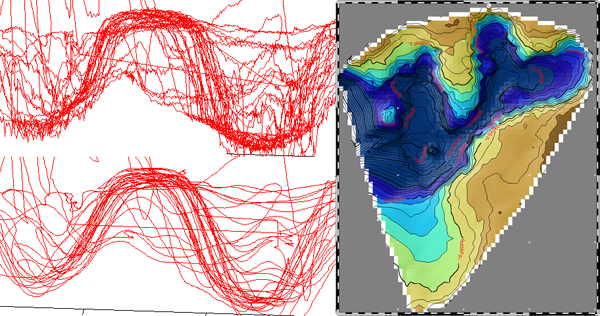
12.08.2008 17:24
Right Whale speed restrictions
Ships Must Slow Down to Protect North Atlantic Right Whales
[NOAA]
...
The 10-knot speed restriction will extend out to 20 nautical miles
around major mid-Atlantic ports. According to NOAA researchers, about
83 percent of right whale sightings in the mid-Atlantic region occur
within 20 nautical miles of shore. The speed restriction also applies
in waters off New England and the southeastern U.S., where whales
gather seasonally.
The speed restrictions apply in the following approximate locations at
the following times; they are based on times whales are known to be in
these areas:
* Southeastern U.S. from St. Augustine, Fla. to Brunswick,
Ga. from Nov. 15 to April 15
* Mid-Atlantic U.S. areas from Rhode Island to Georgia from Nov. 1
to April 30
* Cape Cod Bay from Jan. 1 to May 15
* Off Race Point at northern end of Cape Cod from March 1 to April 30
* Great South Channel of New England from April 1 to July 31
NOAA also will call for temporary voluntary speed limits in other
areas or times when a group of three or more right whales is
confirmed. Scientists will assess whether the speed restrictions are
effective before the rule expires in 2013.
...
12.08.2008 14:43
Chirp Seismic and Piston Coring videos
Here are a series of videos created
by Genevieve Tauxe for Neal Driscoll's Chirp Lab using Flash MX
during a 2004 cruise.
Towing a chirp subbottom profiler
Chirp seismic match filtering of data
Piston Coring
Towing a chirp subbottom profiler
Chirp seismic match filtering of data
Piston Coring
12.08.2008 10:28
Fink dependency magic for django
Charles Lepple found a bug in my
Django packaging that broke the -py26 variant. He also suggested
that I do a better job of the dependencies in general. Python 2.5
and Python 2.6 both already come with sqlite3, so there is no
requirement for any extra database interfaces. Here is a clip from
django-py.info:
Depends: << python%type_pkg[python], docutils-py%type_pkg[python], (%type_raw[python] = 2.4) pysqlite2-py%type_pkg[python] | (%type_raw[python] = 2.4) mysql-python-py%type_pkg[python] | (%type_raw[python] = 2.4) psycopg2-py%type_pkg[python] << BuildDepends: setuptools-py%type_pkg[python] (>= 0.6c2-1) Recommends: << (%type_raw[python] = 2.5) mysql-python-py%type_pkg[python], (%type_raw[python] = 2.5) psycopg2-py%type_pkg[python], (%type_raw[python] = 2.6) mysql-python-py%type_pkg[python], (%type_raw[python] = 2.6) psycopg2-py%type_pkg[python] <<Then AKH pointed out that I can check the fink side of the house for the dependencies:
% fink dumpinfo -fdepends django-py24 Information about 7551 packages read in 1 seconds. depends: python24, docutils-py24, pysqlite2-py24 | mysql-python-py24 | psycopg2-py24 % fink dumpinfo -fdepends django-py25 Information about 7551 packages read in 0 seconds. depends: python25, docutils-py25 % fink dumpinfo -fdepends django-py26 Information about 7551 packages read in 1 seconds. depends: python26, docutils-py26
12.08.2008 10:05
UNH IT RSS Feed
I was trying to find information on
UNH Network Security and again ran into the fact that the IT pages
do not have RSS feeds. I finally found their RSS feed, but it
wasn't here I expected. It's actually hosted on BlogSpot/Blogger:
unhpipeline.blogspot.com
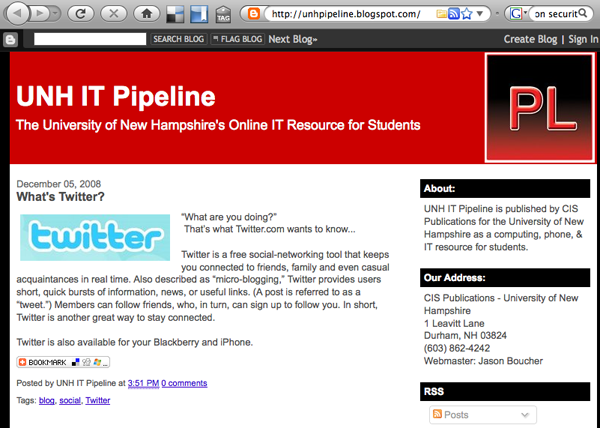
12.08.2008 07:32
Cold
The temp just fell off a cliff. Check
out the temp at UNH from weather.com. We just hit the single
digits.
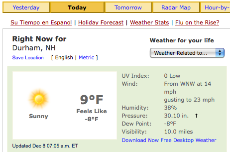
12.07.2008 15:51
LDEO Virtual Ocean
Last week, Andrew Goodwillie came up
to UNH and spent a day talking to us and making several
presentations. We had some excellent discussions on the future of
mapping and charting. For his public seminar, he presented GeoMapApp and the new 3D World Wind
based Virtual
Ocean.
Here are some screen shots from Virtual Ocean to give people a sense of it. First, there is a mask icon on the right side of the buttons. This shows where LDEO has updated the video with submitted multibeam.
The multibeam track line view lets you download the source data that was submitted. This is often the raw multibeam file. The button to get the data is in the bottom right corner.
The MDG77 track lines contain depth, gravity, and magnetics records from cruises. There are a lot of these...
Once you see a cruise, you can get the information page on the cruise. I just googled the cruise name.
There are also single and multichannel seismic data.
Here is looking at some single channel seismic data:
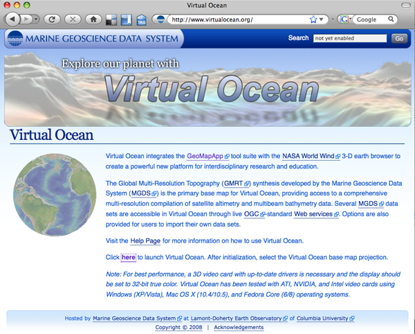
Here are some screen shots from Virtual Ocean to give people a sense of it. First, there is a mask icon on the right side of the buttons. This shows where LDEO has updated the video with submitted multibeam.
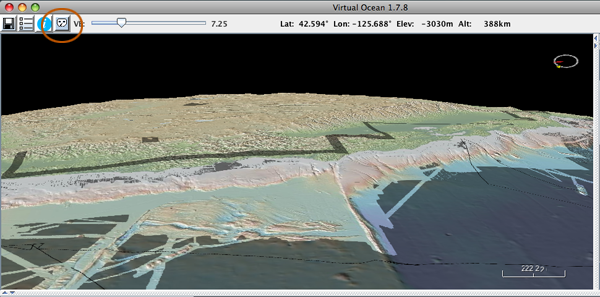
The multibeam track line view lets you download the source data that was submitted. This is often the raw multibeam file. The button to get the data is in the bottom right corner.
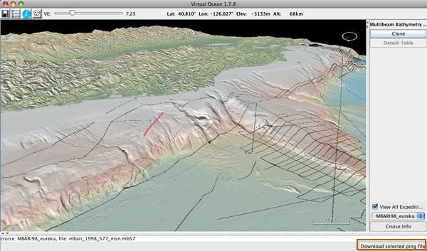
The MDG77 track lines contain depth, gravity, and magnetics records from cruises. There are a lot of these...
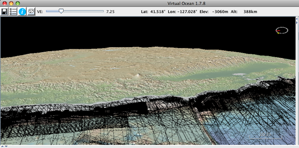
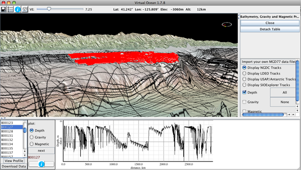
Once you see a cruise, you can get the information page on the cruise. I just googled the cruise name.
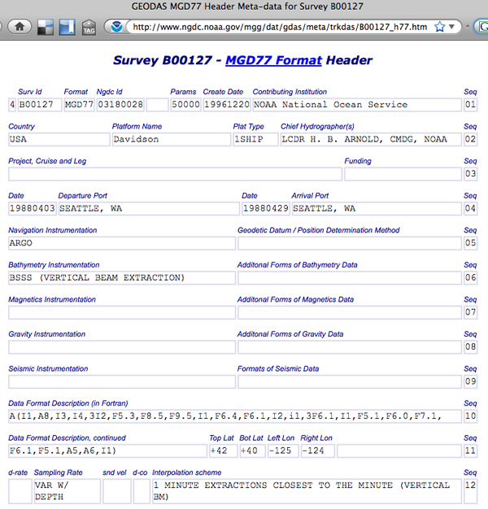
There are also single and multichannel seismic data.
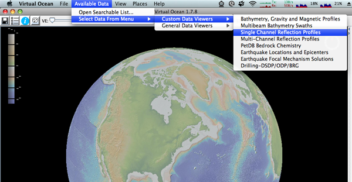
Here is looking at some single channel seismic data:
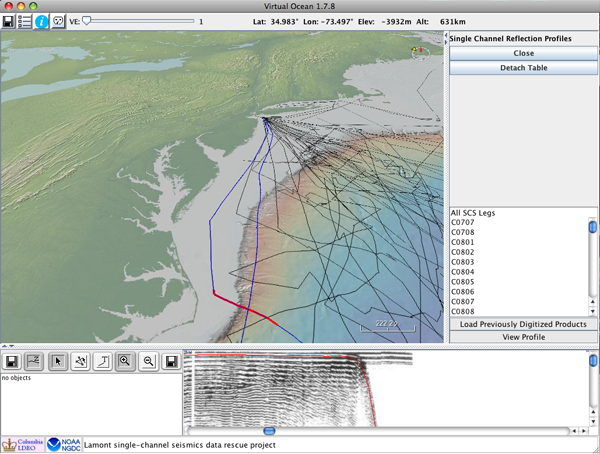
12.07.2008 13:52
geodjango in fink
A question to the Django community:
Why did you have to name the released code for django as
Django-1.0.2-final.tar.gz? Why not django-1.0.2.tar.gz? The
final is a new thing and kinda strange.
I finally committed a geodjango package to fink today. I had something working many months ago, but then the Django 1.0 release came along and changed enough that I needed to redo my package. The package is called django-gis-py25. As soon as docutils gets a py26 package, I will release django-gis-py26. Be warned that I don't change the #!/usr/bin/env python lines that get generated by djangoadmin2.5 startproject.
A quick note is in order about naming. I was contemplating calling the package geodjango, but I think to follow the convention of apache2 in fink, I will call all django apps django-appname-py2[456].
Would be nice to start looking at packaging pinax and/or all the django applications that are in pinax.
I finally committed a geodjango package to fink today. I had something working many months ago, but then the Django 1.0 release came along and changed enough that I needed to redo my package. The package is called django-gis-py25. As soon as docutils gets a py26 package, I will release django-gis-py26. Be warned that I don't change the #!/usr/bin/env python lines that get generated by djangoadmin2.5 startproject.
A quick note is in order about naming. I was contemplating calling the package geodjango, but I think to follow the convention of apache2 in fink, I will call all django apps django-appname-py2[456].
Would be nice to start looking at packaging pinax and/or all the django applications that are in pinax.
% ls local_apps external_apps external_apps: __init__.py crashlog flag oembed tagging ajax_validation dbtemplates friends pagination things announcements django_extensions gravatar photologue threadedcomments app_plugins djangologging mailer robots timezones avatar emailconfirmation messages sources.txt voting bookmarks feedutil notification swaps wiki local_apps: account basic_profiles django_openidauth profiles zwitschern analytics bbauth django_openidconsumer projects authsub blog misc tribesI also updated mapserver to 5.2.1.
12.05.2008 12:08
MarView - Maritime Administration web site
I've just been checking out the US
Maritime Administration (MARAD) MarView website. Note: I am using FireFox
3.0.4 to view the website and it looks like it is designed just for
IE.
First, I went to the public front page and registered for an account.
Once I got an account, this is the screen that I got:
I went to check out the Vessels tab. There are links to vessel traffic, which turned out to be a link to AisLive.
Here is the Crisis Tracking page. Note that the formatting will probably look fine on IE.
Under data sets, there are a lot of links to public web pages. For example, here is what is under Modeling and Simulation.
I didn't see anything of interest in RSS feeds. These are all pretty standard and I'll stick to reading RSS using Vienna on my Mac.
They have a database of locks and lock status that pops up MS Virtual Earth with a placemark for the lock. Make sure to zoom out a bit to see the lock as I think these are based off of the street address assigned to the lock that can sometime be a ways away from the actual lock.
First, I went to the public front page and registered for an account.
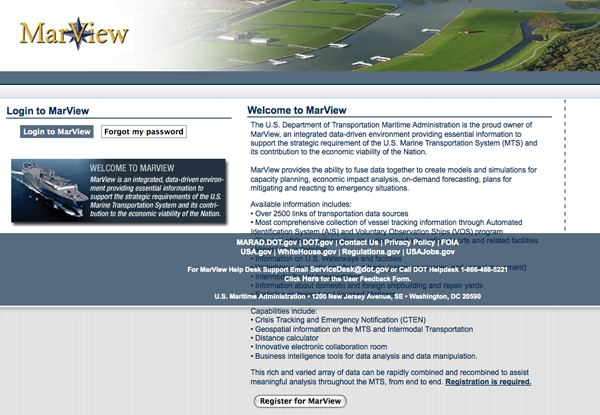
Once I got an account, this is the screen that I got:
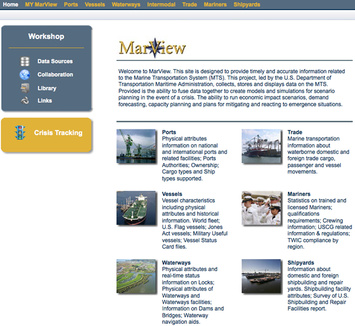
I went to check out the Vessels tab. There are links to vessel traffic, which turned out to be a link to AisLive.
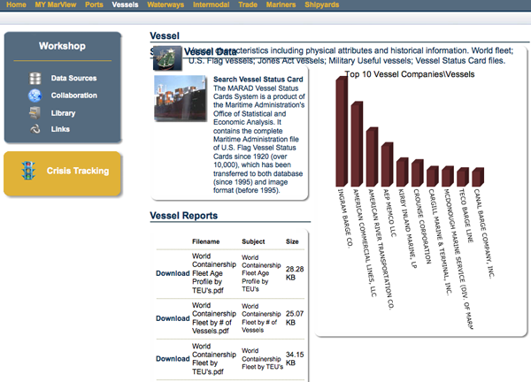
Here is the Crisis Tracking page. Note that the formatting will probably look fine on IE.
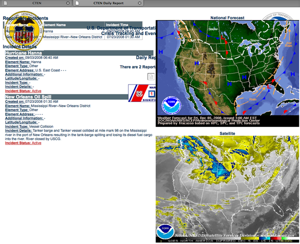
Under data sets, there are a lot of links to public web pages. For example, here is what is under Modeling and Simulation.
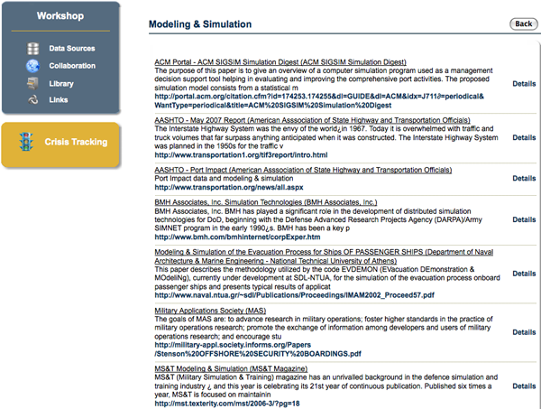
I didn't see anything of interest in RSS feeds. These are all pretty standard and I'll stick to reading RSS using Vienna on my Mac.
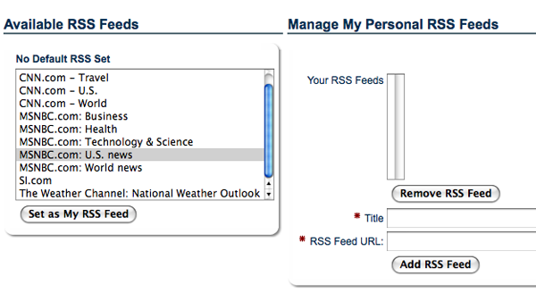
They have a database of locks and lock status that pops up MS Virtual Earth with a placemark for the lock. Make sure to zoom out a bit to see the lock as I think these are based off of the street address assigned to the lock that can sometime be a ways away from the actual lock.
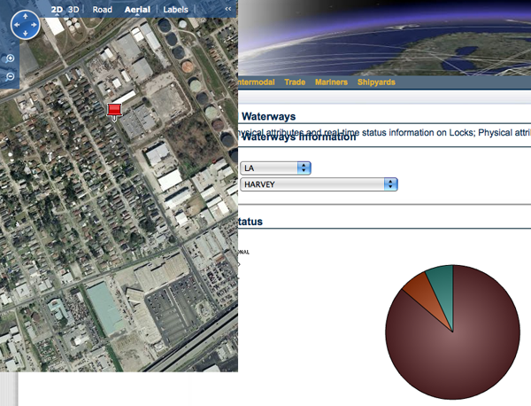
12.04.2008 17:42
AGU 2008
AGU is going to be a busy one this
year. On Monday, I will be at NASA Ames giving a talk in N269.
Tuesday, it looks like I will be giving
a Google Tech Talk, and Thursday I will be presenting in the
Virtual
Globes - Session
1.
12.04.2008 14:03
Python 3.0 released
Python 3.0 Released [slashdot]
Python 3.0
I have yet to check out how my code will do with python 3.0. This will be interesting.
Python 3.0
I have yet to check out how my code will do with python 3.0. This will be interesting.
12.04.2008 13:40
Mars Science Lab mission postponed
By ALICIA CHANG LOS ANGELES (AP) -- A NASA insider says the space agency is delaying launch of a giant Mars robotic mission. The Mars Science Laboratory was scheduled to fly next year. But the project has been dogged by cost increases and technical challenges. The launch has been postponed until 2011. ...
12.03.2008 14:47
UNH Marine Program web page
I've just been added to the UNH Marine Program
Faculty Page, which is an impressive list of 70 faculty
members.
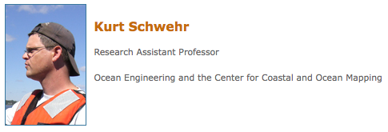
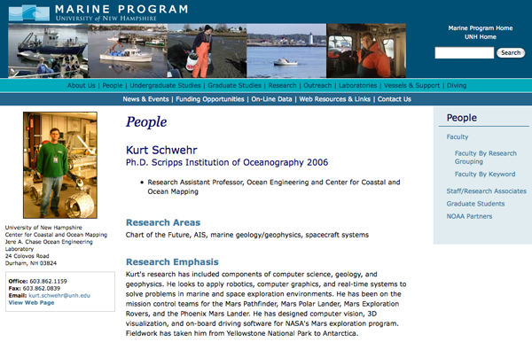
12.03.2008 14:35
air photo
The guy next to me in the plane was
sure that my camera wouldn't be able to cope. It just depends what
you are after
This is the window that I shot the above picture through... pretty miserable view.
Things to do when you travel on planes all the time...
This is the window that I shot the above picture through... pretty miserable view.
Things to do when you travel on planes all the time...
12.03.2008 14:26
Dover Holiday Parade
Last Sunday was the Dover Holiday
Parade and the first snow of the year. A bunch of us headed over to
check out the festivities. You can just make out the snow in the
photos.
12.02.2008 19:25
Microsoft - Eagle 1
This sounds a lot like the
Environmental Response Management Application (ERMA)...
A sneak peek at 10 technologies developed in Microsoft's R&D labs [network world]
A sneak peek at 10 technologies developed in Microsoft's R&D labs [network world]
Codename: Eagle 1 ... Barry is championing a new project called Eagle 1, which is a data visualization and mapping tool. "After any major disaster, during the debrief, the first thing that always comes up is the communication and collaboration," he says. "Trying to get real-time information from all of the agencies involved to make life-saving decisions, the more quality information you can have, the better. There's a difference between information you can use and just raw data. ... All the data is shown in a real-time interactive map using Virtual Earth, but the key is how Eagle 1 pulls data from many different sources (such as from both Oracle and SAP databases) and presents the results on one screen that can even run on a Microsoft Surface table. Barry said the process of configuring the data extractions will likely involve a team of Microsoft disaster specialists.
12.02.2008 07:53
Building debs
Val
pointed to
making debs of packages. I'm pretty good at the fink info
files, but it hides the deb creation, so I don't really know how to
make debs correctly.
In the past, I've looked through the Ubuntu resources to see if they could help.
Hands On Packaging Guide and Masters of the Universe School
Here is how to see what fink is doing...
First edit /sw/etc/fink.conf and add this line to keep part of the build process around. Fink normally deletes these temporary files. Make sure to remove the line when done!
In the past, I've looked through the Ubuntu resources to see if they could help.
Hands On Packaging Guide and Masters of the Universe School
Here is how to see what fink is doing...
First edit /sw/etc/fink.conf and add this line to keep part of the build process around. Fink normally deletes these temporary files. Make sure to remove the line when done!
KeepRootDir: trueNow build something or rebuild it if you already have it installed.
% fink rebuild pyserial-py6Now take a look at the deb that was just produced:
% dpkg-deb --info /sw/fink/debs/pyserial-py26_2.0-12_darwin-i386.deb
new debian package, version 2.0.
size 31270 bytes: control archive= 1539 bytes.
1652 bytes, 40 lines control
2129 bytes, 58 lines package.info
Package: pyserial-py26
Source: pyserial-py26
Version: 2.0-12
Section: libs
Installed-Size: 136
Architecture: darwin-i386
Priority: optional
BuildDependsOnly: Undefined
Depends: python26, darwin (>= 9-1)
...
And what files are in the deb:
dpkg-deb --contents /sw/fink/debs/pyserial-py26_2.0-12_darwin-i386.deb drwxr-xr-x root/admin 0 2008-12-02 07:34 ./ drwxr-xr-x root/admin 0 2008-12-02 07:34 ./sw/ drwxr-xr-x root/admin 0 2008-12-02 07:34 ./sw/lib/ drwxr-xr-x root/admin 0 2008-12-02 07:34 ./sw/lib/python2.6/ drwxr-xr-x root/admin 0 2008-12-02 07:34 ./sw/lib/python2.6/site-packages/ -rw-r--r-- root/admin 822 2008-12-02 07:34 ./sw/lib/python2.6/site-packages/pyserial-2.0-py2.6.egg-info drwxr-xr-x root/admin 0 2008-12-02 07:34 ./sw/lib/python2.6/site-packages/serial/ -rw-r--r-- root/admin 722 2008-12-02 07:34 ./sw/lib/python2.6/site-packages/serial/__init__.py -rw-r--r-- root/admin 533 2008-12-02 07:34 ./sw/lib/python2.6/site-packages/serial/__init__.pyc -rw-r--r-- root/admin 7778 2008-12-02 07:34 ./sw/lib/python2.6/site-packages/serial/serialjava.py -rw-r--r-- root/admin 8260 2008-12-02 07:34 ./sw/lib/python2.6/site-packages/serial/serialjava.pyc -rw-r--r-- root/admin 14431 2008-12-02 07:34 ./sw/lib/python2.6/site-packages/serial/serialposix.py ...Now it is time to see where this stuff came from.
% cd /sw/src/fink.build/root-pyserial-py26-2.0-12/ % ls -l total 0 drwxr-xr-x 4 root admin 136 Dec 2 07:34 DEBIAN drwxr-xr-x 4 root admin 136 Dec 2 07:34 swsw contains the files to be installed as a complete tree. The DEBIAN directory contains the control files.
% cd DEBIAN % ls -l total 8 -rw-r--r-- 1 root admin 1652 Dec 2 07:34 control -rw-r--r-- 1 root admin 2129 Dec 2 07:34 package.infoTake a look at the control file that describes the package:
% less control Package: pyserial-py26 Source: pyserial-py26 Version: 2.0-12 Section: libs Installed-Size: 136 Architecture: darwin-i386 Priority: optional BuildDependsOnly: Undefined Depends: python26, darwin (>= 9-1) Maintainer: Blair Zajac Description: Python access to serial ports pySerial -------- This module encapsulates the access for the serial port. It provides backends for standard Python running on Windows, Linux, BSD (possibly ...Content truncated to save space... . Web site: http://pyserial.sourceforge.net/ . Maintainer: Blair ZajacAnd the package.info:
Info2: << Package: pyserial-py%type_pkg[python] Version: 2.0 Revision: 12 Distribution: (%type_pkg[python] = 23) 10.3, (%type_pkg[python] = 23) 10.4 Type: python(2.3 2.4 2.5 2.6) Description: Python access to serial ports License: OSI-Approved Homepage: http://pyserial.sourceforge.net/ Maintainer: Blair Zajac # Dependencies. Depends: python%type_pkg[python] # Unpack Phase. Source: mirror:sourceforge:pyserial/pyserial-%v.zip Source-MD5: 80a26774156ba38b63b0945f2b511695 # Patch Phase. # Change CRLF line endings to LR line endings. PatchScript: find . -type f -print0 | xargs -0 perl -w -p -i -e 's/\s+$/\n/' ...That is a a pretty simple package. There are not post install or post removal scripts to run. To take a look at something more complicated, try looking at PostgreSQL:
% fink rebuild postgresql83Now take a look at the DEBIAN files:
% /sw/src/fink.build/root-postgresql83-8.3.5-1/DEBIAN % ls -l -rw-r--r-- 1 root admin 1545 Dec 2 07:56 control -rw-r--r-- 1 root admin 21230 Dec 2 07:56 package.info -rwxr-xr-x 1 root admin 1775 Dec 2 07:56 postinst -rwxr-xr-x 1 root admin 192 Dec 2 07:56 postrm -rwxr-xr-x 1 root admin 265 Dec 2 07:56 prerm
12.01.2008 22:40
Post number --- 3000 ---
Note: don't use '*' in your
nanoblogger titles. It does 'bad things' (TM).
I blog alot... This is post 3000. I wish I had started blogging earlier. My notes prior to the Mars Exploration Rovers are on paper and just not very complete.
My work log notes have gotten more detailed over the years, but really do not do a good job of providing reproduceability.
I blog alot... This is post 3000. I wish I had started blogging earlier. My notes prior to the Mars Exploration Rovers are on paper and just not very complete.
My work log notes have gotten more detailed over the years, but really do not do a good job of providing reproduceability.
Lines Year
702 1994
3331 1995
0 1996
0 1997
2629 1998
0 1999
0 2000
631 2001
62 2002
5031 2003
12163 2004 # Note taking really starts 18-Mar as suggestion from Anne Wright during MER
6644 2005
19332 2006
28306 2007
27630 2008
My personal rough guidelines of blogging:
- "If you don't write about it, it didn't happen" -NWD
- Science and engineering are about reproducibility
- Email doesn't capture what is going on very well. High bandwidth, low signal
- Don't revise prior posts other than typos. Call out updates with a date
- I don't allow comments, but I accept email feedback
- When I get material elsewhere, I try to attribute what I can to the original sources
- I love paper notebooks, but they are not electronically searchable (google or grep)
- Pictures are critical (wish I had started adding pictures sooner)
12.01.2008 21:48
python packages
Sean Gillies has an interesting
article today: How
to lay out Python project codePaste Script (PasteScript on PyPi)
to stub out a python project. Missing is a file I count on as a
packager (well... when it is present) - the ChangeLog file.
Checking out the svn trees for diffs, just doesn't help that much
when I'm packaging for fink. Would be nice if django-admin could do
the same.
To go with the theme of packaging, Val just submitted his first package to pypi (the Python Package Index)... gpsparser.
I've been trying to maintain a template file of python code that I use often, but I think it has been lagging. It would be good to have something like PasteScripts's project builder.
template.py
To go with the theme of packaging, Val just submitted his first package to pypi (the Python Package Index)... gpsparser.
I've been trying to maintain a template file of python code that I use often, but I think it has been lagging. It would be good to have something like PasteScripts's project builder.
template.py
12.01.2008 15:21
Dan Goldman - Video Manipulation
Art T. just sent me a couple links. I
am highly amused as one of the links is to a video by Dan Goldman.
Dan was my lab partner for two undergrad classes at Stanford. He is
one smart guy. Check out his video.
Interactive Video Object Manipulation from Dan Goldman on Vimeo.
Video Visualization and Interaction / Video Visualization and Interaction [Adobe]
Interactive Video Object Manipulation from Dan Goldman on Vimeo.
Video Visualization and Interaction / Video Visualization and Interaction [Adobe]
12.01.2008 13:45
E-Navigation conference in 05-06 Mar 2008
Call for Papers and First Invitation: E - Navigation, March 5th -
6th 2009, Norway
Currently IMO is working on a strategic vision for maritime E-Nav, with the purpose of integrating existing and new electronic navigational tools in an all-embracing system that will contribute to enhanced navigation safety while simultaneously reducing the burden on the navigator. Are the systems of today all-embracing? Do they reduce the burden, or are they an extra workload? Are the systems safer than the old fashioned manual navigation? ... Closing date for submissions: February 13th 2009. The main topics will be: # The concept of E-navigation # User experiences # User requirements # Charting and display issues # Navigation and positioning systems # Communications # Information architecture for E-Navigation # Regulatory and legal aspects # Any other topic, the author feels relevant for this conference.
12.01.2008 11:57
Getting OpenNMS to monitor a computer
I got a bit turned around trying to
add my first machine to OpenNMS. Turns out, I just had to read the
whole paragraph before trying it. I was just hitting the search
button with no luck on any combination. Here is what I did:
Go to Admin and select Configure Discovery.
Go to Include Ranges and add your range to search. I'm going to only one one machine here and there. I have single machines placed about the country that I want to monitor.
After pressing Save and Restart Discovery at the bottom of the previous page, wait a mint or two and check out the Node List. I see here that it picked up the main services on the machine.
Go to Admin and select Configure Discovery.
Go to Include Ranges and add your range to search. I'm going to only one one machine here and there. I have single machines placed about the country that I want to monitor.
After pressing Save and Restart Discovery at the bottom of the previous page, wait a mint or two and check out the Node List. I see here that it picked up the main services on the machine.